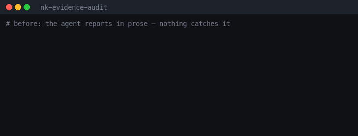
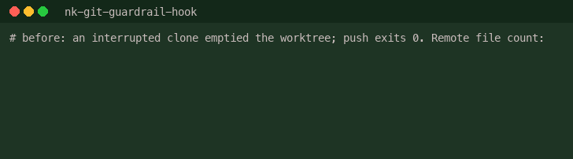
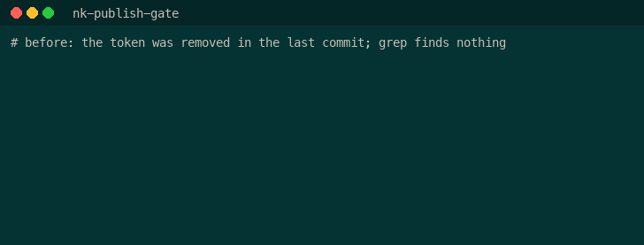
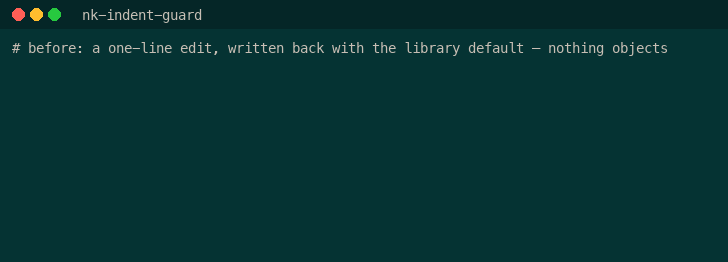
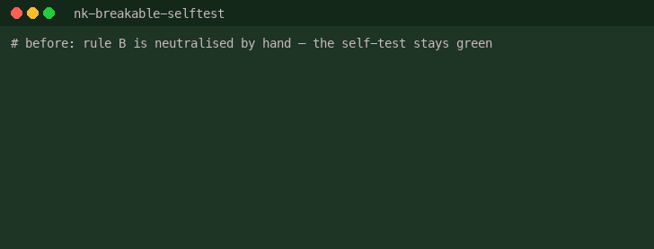
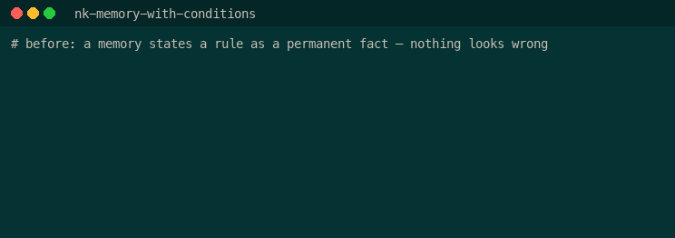
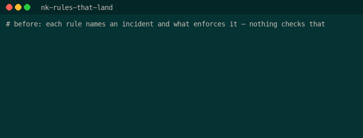
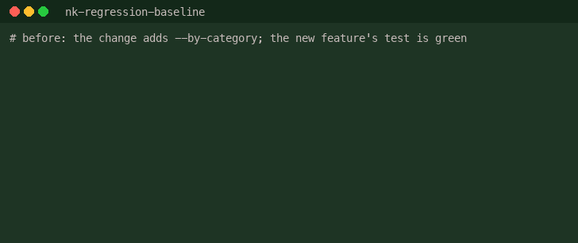
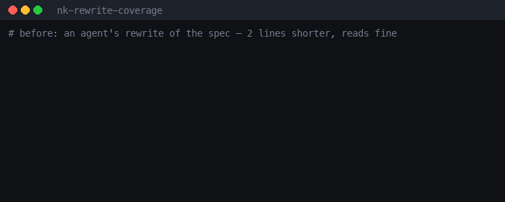
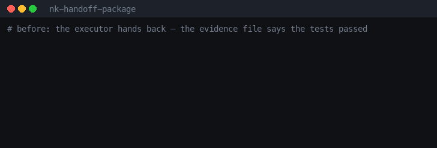

nk-evidence-audit discipline
"Fixed and tested" becomes raw output a second agent judges: supported, not supported, insufficient.
git clone https://github.com/NickkkLian/nk-evidence-audit ~/.claude/skills/nk-evidence-auditSkills for Claude Code that stop an AI coding agent's "done, tested, safe" from being taken on faith.
/plugin marketplace add NickkkLian/nickkk-skills
"Fixed and tested" becomes raw output a second agent judges: supported, not supported, insufficient.
git clone https://github.com/NickkkLian/nk-evidence-audit ~/.claude/skills/nk-evidence-audit
Stops before force push, mass delete, repo-gone-public and curl|sh — each prompt names its incident.
git clone https://github.com/NickkkLian/nk-git-guardrail-hook ~/.claude/skills/nk-git-guardrail-hook
Finds the path inside the nested archive and the secret still in your git history.
git clone https://github.com/NickkkLian/nk-publish-gate ~/.claude/skills/nk-publish-gate
A one-line JSON edit that re-indented the whole file no longer reaches the commit.
git clone https://github.com/NickkkLian/nk-indent-guard ~/.claude/skills/nk-indent-guard
Breaks the code your self-test guards, one line at a time, and names the checks that never react.
git clone https://github.com/NickkkLian/nk-breakable-selftest ~/.claude/skills/nk-breakable-selftest
Agent memories that say when they hold, plus a sentinel for index drift and silent truncation.
git clone https://github.com/NickkkLian/nk-memory-with-conditions ~/.claude/skills/nk-memory-with-conditions
Tells you which rules in your CLAUDE.md would actually stop an agent and which are wishes.
git clone https://github.com/NickkkLian/nk-rules-that-land ~/.claude/skills/nk-rules-that-land
Freezes what production code prints today so tomorrow's refactor has to prove it changed nothing.
git clone https://github.com/NickkkLian/nk-regression-baseline ~/.claude/skills/nk-regression-baseline
After a rewrite, lists what the old version had and the new one lost — with a verdict required for each.
git clone https://github.com/NickkkLian/nk-rewrite-coverage ~/.claude/skills/nk-rewrite-coverage
Hand work to an agent with no context and get it back checkable, down to the trust root.
git clone https://github.com/NickkkLian/nk-handoff-package ~/.claude/skills/nk-handoff-package